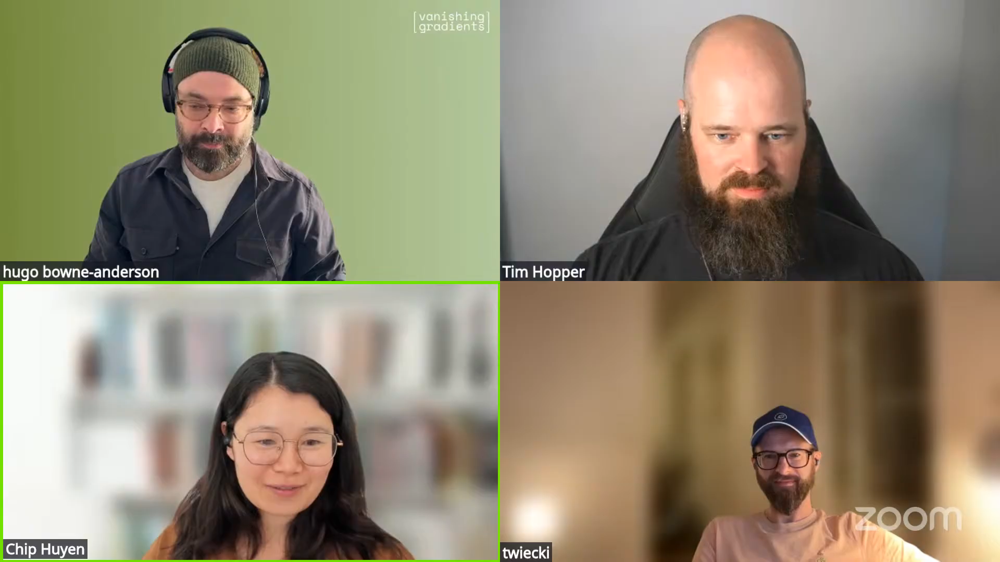
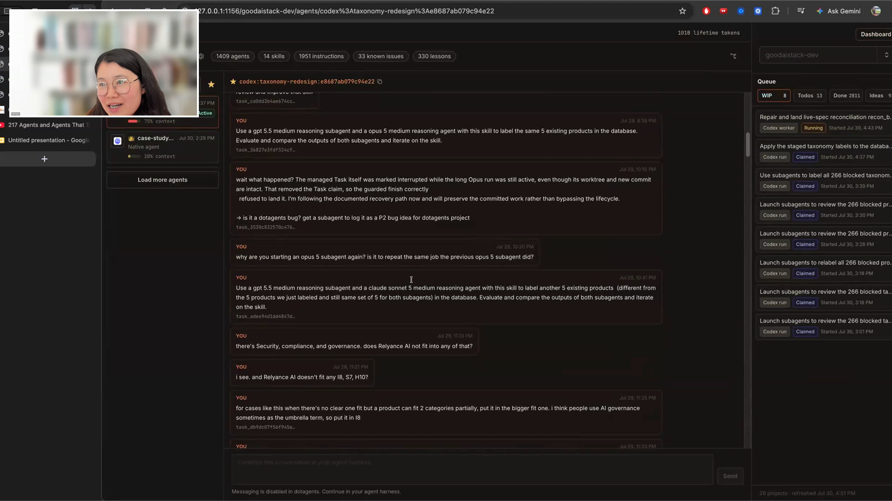
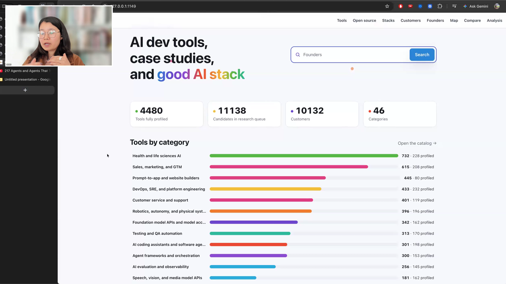
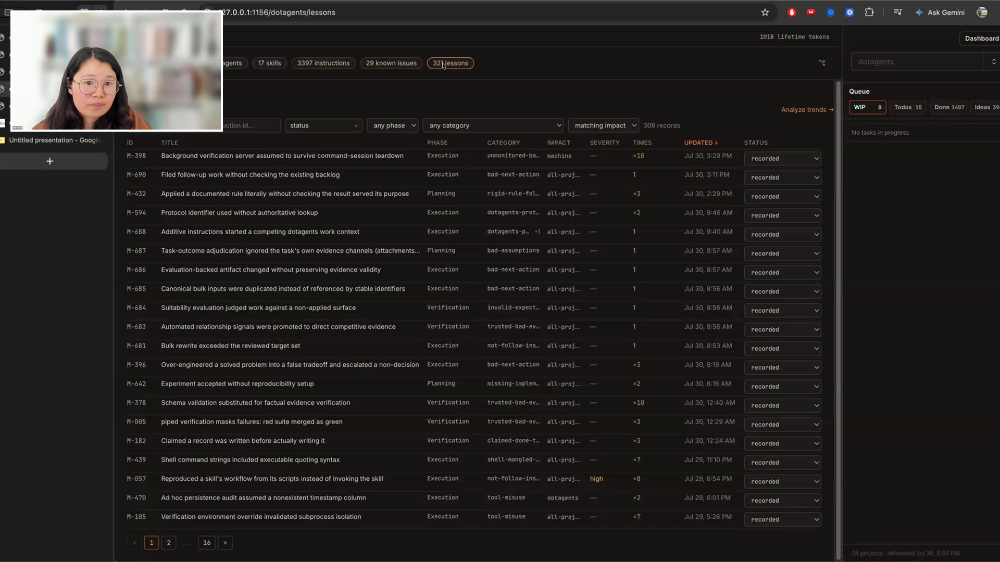
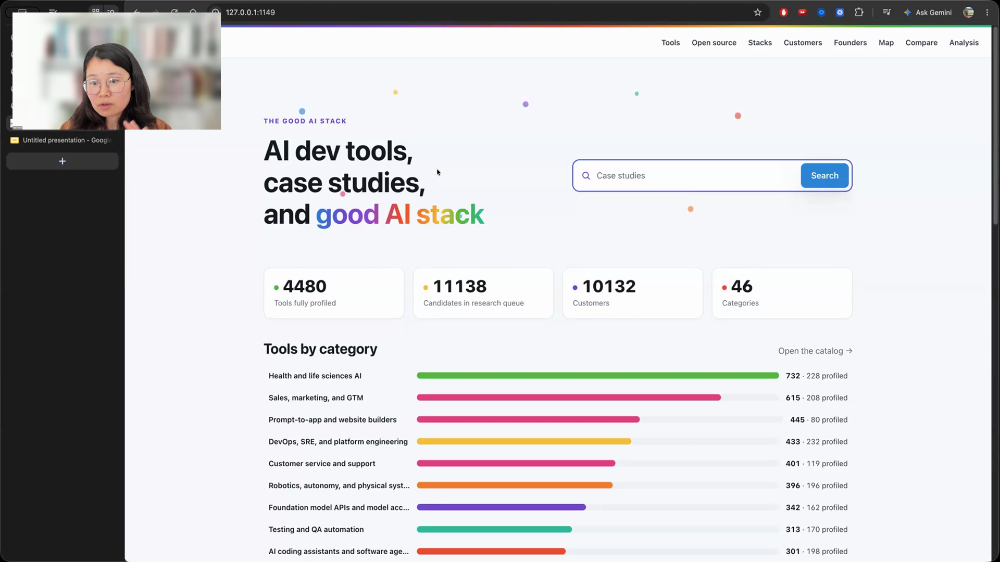

cross-provider agent swarms
Test a shared instruction across providers, give planning and review to a strong agent, distribute repeated implementation to cheaper workers, and keep the handoffs inside one runner.
Chip showed a Good AI Stack project containing 1,409 agents, 1,951 instructions, and 330 recorded lessons. Her runner puts a strong model such as Fable in charge of planning and review, then hands repeated implementation to cheaper workers across providers. For each task, it records what Chip asked, which agent handled it, whether it finished, and the evidence the agent returned.

Chip used to copy plans and review comments between model-provider tabs. Her runner lets one agent ask another to review its plan, receive the response, and assign follow-up work in the same conversation.
The supervising agent spends its reasoning on the plan, worker selection, review, and deciding whether the assigned task is finished. Once Chip is happy with the guideline or plan, it can send repeated work to Sonnet, GPT, DeepSeek, Kimi, or other cheaper agents.
The Good AI Stack project she showed contained 1,409 agent entries, 14 skills, 1,951 instructions, 33 known issues, and 330 lessons. Chip can return to the runner instead of reconstructing the job from open tabs.

"I get a very strong agent to make plans and think, and then it assigns tasks to a bunch of cheaper agents to do it."

"I care more about what I think of as human context management."
Every instruction can become a task record. The runner preserves what Chip asked for, which agent received it, whether the work finished, and the evidence that agent supplied. When a bug returns, she can inspect the record instead of searching every conversation.
What Chip asked stays visible during planning and implementation. Otherwise, an early misunderstanding can become the plan, then the plan can replace the task she actually gave the agent.
Failures become records too. Chip classifies planning errors, execution errors, instruction-following failures, and jobs that should have used a deterministic script. That history helps her decide which model should receive similar work next time.

"It's horrible for my mental health."
When an agent changes an interface, Chip's verified frontend skill tells it to open the site in a browser, inspect the rendered result, improve visible problems, and capture a screenshot.
The screenshot travels with the pull request, so Chip can review the visible result without checking out and running every branch. The browser mechanism depends on the environment: the desktop app can use its built-in browser, while a terminal or CI run needs a local headless browser.
Chip wanted a script to detect that environment. Asking another agent to reason about a deterministic choice would add another instruction that could fail silently.

Test a shared instruction across providers, give planning and review to a strong agent, distribute repeated implementation to cheaper workers, and keep the handoffs inside one runner.
Open frontend changes in a browser, inspect the visible page, fix what is visibly wrong, and return screenshot evidence with the work.
Define category boundaries, apply them to the same products through different providers, and revise the guideline where their labels diverge.
Stop agents from turning trivial copy changes, removed behavior, or the wording of a skill file into permanent regression tests.